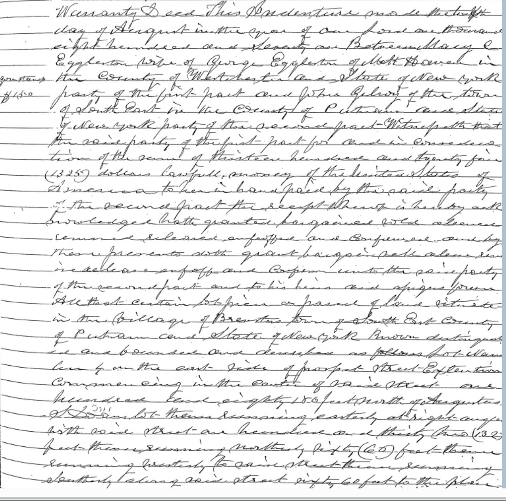
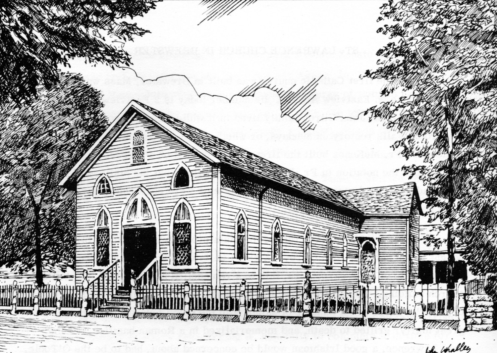
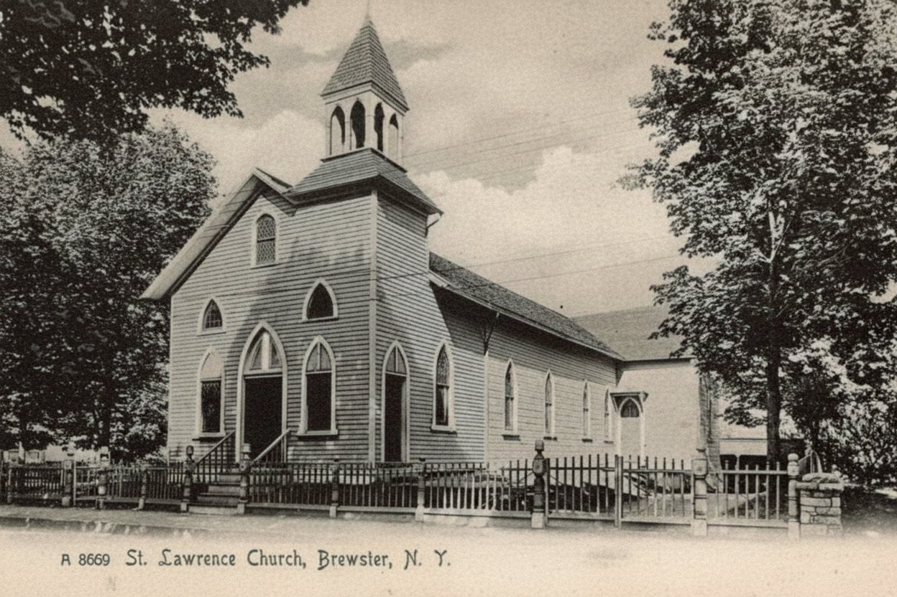
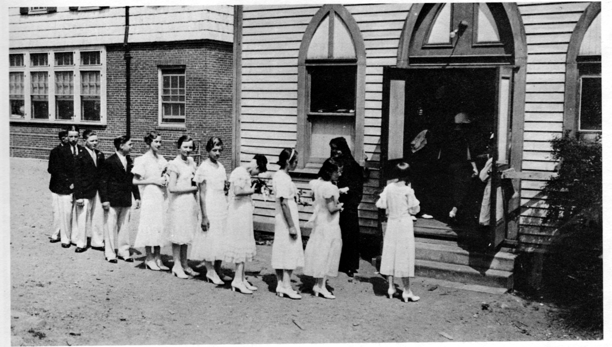
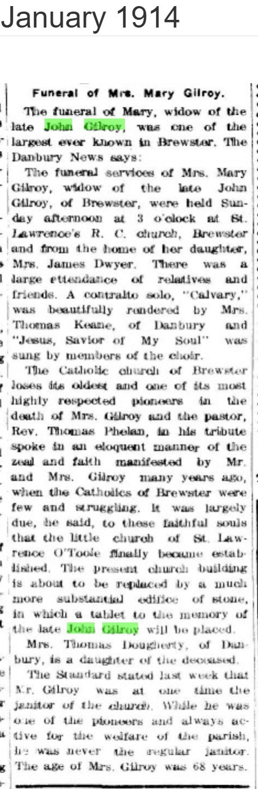
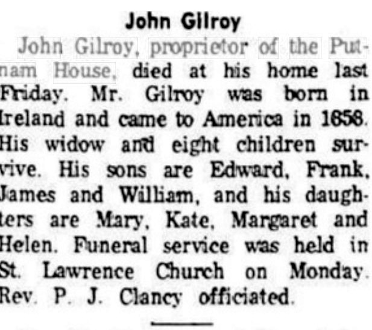

The Gilroy House
An Irish immigrant family, the Eastview Avenue home remembered as the village’s first Catholic worship site, and the documented 1871–1872 transaction behind the founding of St. Lawrence O’Toole.
I. At a glance
John Gilroy and his wife Mary were Irish immigrants who settled in Brewster around the end of the 1850s and built a household at the north end of what became Eastview Avenue. The deed record confirms John Gilroy as owner of that home lot from 1867, on a parcel that already carried a dwelling house in 1863. By a parish tradition now in print for more than fifty years, the Gilroy home was the place where Brewster’s scattered Catholics gathered for Mass before there was any church — and the family stands behind the founding of St. Lawrence O’Toole in 1871.
For a long time the specific land transaction behind that founding was a question this project could not answer from the record: searches for a Gilroy-to-church deed came up empty. The reason turned out to be a cataloguing quirk, and the resolved chain is now documented end to end. In 1871 John Gilroy bought a lot on Prospect Street; in 1872 he and Mary conveyed it to the Archbishop of New York; in 1886 the Archbishop deeded it to the incorporated parish. The 1872 conveyance was a sale for $738.50 (the church also taking on an existing mortgage), not the outright gift the tradition describes — but at a price so close to Gilroy’s own cost that the transaction reads as a layman fronting the parcel on the parish’s behalf, exactly as the earliest parish account frames it. This piece keeps the documented facts and the devotional tradition carefully apart.
II. The Irish in Brewster, before 1871
The Catholic community John and Mary Gilroy joined was a product of the railroad. The Harlem line reached Brewster in the late 1840s, and Gail Borden’s condensed-milk factory followed in 1861; together they drew a workforce that included a substantial number of Irish immigrants. St. Lawrence O’Toole began as a mission of St. Joseph’s in Croton Falls, itself founded in 1845 as part of the Catholic expansion that followed the Harlem railroad north out of the city.
Before 1871 Brewster had no Catholic church of its own; the faithful traveled to Carmel or Croton Falls, or gathered in private homes. The 1922 parish history, drawn from St. Lawrence’s baptismal records, preserves the earliest missionary chain — Jesuit fathers from Fordham College, then Rev. Charles Slevin (who took charge from Mt. Kisco to Millerton in 1859) and Rev. John Orsenigo (from 1865) — before the events of 1871. It is into this gap, in the decade before the parish existed, that tradition places the Gilroy home.
III. The Gilroys at home on “New Street”
According to the parish histories, John and Mary Gilroy were both born in Ireland — John in 1839, Mary in 1840 — married in 1857, arrived in America in 1858, and settled in Brewster, where John worked at the railroad depot (McCabe’s account specifies baggage-master, doubling as switch-tender, janitor and custodian of the milk cans, and later keeper of the cottage at Drewville reservoir) and raised thirteen children. These origin details trace to the parish’s 1878–1978 centennial history (McCabe 1978) and are repeated in the 2021 bulletin; both are parish tradition rather than verified record — and some of the detail may belong to the second John Gilroy (Section VII). One point can be tested and does not hold: Mary’s 1914 funeral notice gives her age at death as sixty-eight, placing her birth around 1845–46, not 1840. The contemporaneous obituary outranks the parish accounts (1978 and 2021 alike), so her birth year is carried here as c. 1845–46. The same notice names two daughters — Mrs. James Dwyer of Brewster and Mrs. Thomas Dougherty of Danbury — the only Gilroy children documented here by a primary source.
The family home, by contrast, is richly documented. The lot lay on the east side of a “contemplated new road” — the future Eastview Avenue, which early deeds and clippings called “New Street” — near the old highway past Harvey Bailey’s dwelling, bounded by Albert Brush to the north and the Ganong family (formerly Samuel Brewster) to the south. Three deeds trace it:
In 1863, Samuel and Eliza Brewster quit-claimed the parcel — about 12,000 square feet (200 by 60 feet), “on which is a dwelling house” — to James C. Gulick for $50 (Liber 38/417). The house already stood on the lot eight years before the parish was founded. In 1867, Gulick conveyed the same lot to John Gilroy of the Town of Southeast by warranty deed for $1,000 (Liber 44/543) — the transaction by which the Gilroys became owners of their Eastview home.
That John Gilroy still lived there decades later is fixed by a third deed. In 1890 he sold a sixty-foot strip off the side of his property to Elias B. Brundage for $1,200, reserving a right of way; the parcel runs to a line “twenty feet west of the inside stoning of a well now on the premises of John Gilroy” (Liber 65/567). The phrase places Gilroy in residence in 1890 and confirms the 1863/1867 parcel as his homestead — the residence the parish accounts describe as the pre-1871 Mass site.
The home’s modern identity can be fixed as well. Two later deeds in the chain of the strip Gilroy kept — the 1952 Ryan–Larkin deed (410/182) and the 1986 Larkin–Maher deed (911/166) — both carry the benefit of “a right of way… as reserved… in Liber 65, cp 567.” Because a reservation benefits the grantor’s retained land, the parcel holding that benefit descends from the homestead Gilroy kept. Matched against the tax map, that retained parcel is 2 Eastview Avenue — so the deed record, not just the parish bulletin, supports the long-stated identification of the Gilroy home.
What the home witnessed before 1871 rests on parish memory. The 2021 anniversary history says the Gilroys opened their Eastview home for Masses and baptisms and kept the Stations of the Cross in their living room; the Town of Southeast 1788–1988 bicentennial volume (1990) likewise records that, while Fr. McKenna was establishing the Brewster church, Mass was temporarily said in the Eastview Avenue home of the John Gilroy family. These are consistent secondary statements, plausible given that the house demonstrably existed by 1863, and they are carried here as a well-attested tradition rather than as independently documented fact.
IV. The 1871–1886 church-lot chain — resolved
The central claim in every telling of the Gilroy story is that the family gave St. Lawrence O’Toole its first church property. The deed record both confirms the family’s central role and corrects the word “gave.”
On August 12, 1871, John Gilroy purchased a lot in the Village of Brewster from Mary C. Eggleston of Mott Haven for $1,325 (Liber 50/455), financing $725 of it with a purchase-money mortgage back to Eggleston. The parcel — “Lot No. 4 on the east side of Prospect Street Extension and a part of Lot No. 5,” 180 feet north of Augustus S. Doane’s lot, about 8,660 square feet — is a separate property from the Eastview home lot.

The earliest account of what followed is the parish history printed in 1922, within the obituary of Rev. Michael J. Henry — attributed to St. Lawrence’s own baptismal records, and the source closest in time to the events:
In 1871 he [Rev. Lawrence McKenna] purchased a lot on Prospect street and an unfinished house, John Gilroy being the supposed purchaser. This good Catholic pioneer transferred the property to the church corporation and the house was remodelled into a church.
— Early history of St. Lawrence O’Toole, in the obituary of Rev. Michael J. Henry, Brewster Standard, October 6, 1922
For years no recorded Gilroy-to-church deed could be found, and the absence looked like it might be the story. It was not. The conveyance had been mis-indexed. On January 16, 1872, John and Mary Gilroy deeded the Prospect Street lot to “Most Reverend Archbishop John McCloskey” of New York (Liber 50/492) — but the grantor index dropped his title, so the entry read like an ordinary sale to a private man named John McCloskey, and searches under the church, the parish, or Fr. McKenna turned up nothing. The grantee was in fact the Archbishop (later Cardinal) of New York, the customary holder of Catholic parish real estate in this era. The chain then completes in the church-corporation grantee index: in 1886, Archbishop Michael A. Corrigan conveyed the assembled holding — the Gilroy lot first among the parcels, each with a “same premises” recital naming the 1872 Gilroy deed — to the incorporated Church of St. Lawrence O’Toole (Liber 66/402).
So the full title chain reads: Eggleston → Gilroy (1871) → Archbishop McCloskey (1872) → Church of St. Lawrence O’Toole, by Archbishop Corrigan (1886). The reason there was never a “Gilroy → parish” deed is structural, not a gap: the lot reached the parish through the Archdiocese, as such property routinely did.
And the 1872 deed settles the gift-versus-sale question. Its consideration is $738.50, and the conveyance is expressly subject to the $725 Eggleston mortgage — not the nominal one dollar of a gift. Set against Gilroy’s 1871 cost of $1,325, the value he received ($738.50 in cash plus the $725 the diocese assumed, totaling about $1,463.50) exceeded his outlay by only some $138. In plain terms, John Gilroy bought the lot, carried it for a year, and passed it to the Archdiocese at very near his own cost. The deed record therefore does not support “the Gilroys donated the land” — but it strongly supports the 1922 account’s more careful phrasing, that Gilroy was the “supposed purchaser” who transferred the property: a trusted layman who fronted the parcel for the parish at a near-cost pass-through, with the diocese taking the mortgage.
V. The first church — on the Gilroy lot
The building raised on the Gilroy-conveyed lot was, per the 1922 history, a remodeled unfinished house rather than a purpose-built chapel; it served Brewster’s Catholics for decades. An artist’s conception in the parish history recalls its earliest look — a modest frame church with Gothic windows, before any tower:

Fr. Henry enlarged the building and added a bell tower in 1890; a period postcard preserves that later appearance, on the Prospect Street ground the Gilroys had conveyed:

One piece of that first church still stands in the present one. In 2026, at the project’s inquiry, the parish administrator, Fr. Richard Gill, located a clerestory window on the north side of the nave inscribed “Gift of John Gilroy” — one of the windows carried over from the 1871 wooden church when the stone church was built in 1915. It is the oldest piece of the parish’s physical fabric yet identified, and a tangible Gilroy donation in its own right.
It is worth being precise about what the window is and is not, because three separate acts tend to be run together. The window is a gift John Gilroy made — glass he paid for in the first church. It is not the church land, which the deeds show the Gilroys sold at very near cost rather than donated (Section IV). And it is not the posthumous memorial tablet to John Gilroy that Fr. Phelan announced at Mary’s 1914 funeral, whose installation and survival remain unconfirmed (below). A gift of glass, a sale of land, and a planned memorial — only the first is now fixed by a surviving, inscribed object.
That building was moved bodily onto Eastview Avenue in 1914 to clear the Prospect Street site for the stone church, and was remodeled into a parish school in 1921 — the start of a parish footprint that grew across the block through the 1931 and 1959 school expansions. Because that institutional arc touches the Morehouse factory lot and the Ganong house move, it is treated in its own piece rather than here.

VI. The Gilroys and the published record
One finding is worth being explicit about, because it is itself a piece of social-history evidence. For all that the deed record documents the Gilroys in fine detail, they are absent from every published county history written while they lived and for decades after. The project has searched, for any mention of John or Mary Gilroy: Roberts’s contemporary Historical Sketch of 1876; William S. Pelletreau’s History of Putnam County (1886); the J. H. Beers Commemorative Biographical Record (1897); the Oxford/Haight Historical and Genealogical Record (1912); the Bailey Sketch of Brewster (1944); and Zimm’s Southeastern New York (1946). The name appears in none of them — not even in Roberts 1876, written five years after the founding by a man who was there.
Those same volumes were not silent about Catholic Brewster. Roberts 1876 records the church plainly — “The Catholic Church was erected in the same year, 1871. Its first minister was Father McKenna, now deceased” — and Haight 1912 and Zimm 1946 give full pastoral successions and building dates. When these histories knew the name of a lay donor at a comparable parish, they printed it: Zimm names Reuben D. Baldwin for the Mahopac lot (1866), the Spencer Hances for the Putnam Lake church (1934), the Willard Dykemans for Tilly Foster (1896). They recorded the priests, the buildings, and the wealthier Protestant-era donors of neighboring missions — and not the Irish immigrant couple at the north end of Eastview Avenue.
The Gilroys entered the published record only late, and only as local history changed character. The Town of Southeast 1788–1988 bicentennial volume (1990) names the family and the home-Mass tradition; the parish’s 2021 anniversary bulletin makes them its founding story. Both are community-memory histories written a century or more after the events, drawing on parish tradition rather than on the contemporary documentary trail this project has reconstructed. The pattern is the finding: the men who held the pulpit and the families who could buy into a subscription volume reached print in their own lifetimes; the layman who fronted the parish its first lot reached print only when someone went looking, generations later. The deeds were always there. The published histories simply were not built to receive them.
VII. After Gilroy — and a word on the name
John Gilroy was alive and propertied as late as 1891, when he stood as one of eight sureties on the Putnam County sheriff’s bond, sworn a New York freeholder worth $2,000 — a small primary confirmation of the civic standing the obituaries describe, alongside such names as Mills Reynolds and John Hopkins. His own obituary fixes his death at March 1898 (below); he is documented alive in 1890, and Mary — his “widow” in her own January 1914 notice — outlived him by sixteen years, dying that month at age sixty-eight. Her funeral filled St. Lawrence’s church, and the pastor — Rev. Thomas Phelan, himself a noted Catholic historian — delivered the tribute that stands as the strongest primary attestation of what the Gilroys had done:
It was largely due, he said, to these faithful souls that the little church of St. Lawrence O’Toole finally became established. The present church building is about to be replaced by a much more substantial edifice of stone, in which a tablet to the memory of the late John Gilroy will be placed.
— “Funeral of Mrs. Mary Gilroy,” Brewster Standard, January 1914

The same notice carries a small correction that argues for trusting it: the paper had reported the week before that John Gilroy was once the church’s janitor, and now set the record straight — “While he was one of the pioneers and always active for the welfare of the parish, he was never the regular janitor.” A source willing to correct its own error about a man is one to weight heavily on what it affirms.
His own death is now fixed by his obituary. John Gilroy — named there as proprietor of the Putnam House, the hotel he had built in 1880 — “died at his home last Friday,” with the funeral at St. Lawrence the following Monday, Rev. P. J. Clancy officiating. Three independent details date it to the day. Clancy’s Brewster pastorate ran 1896–1899; McCabe’s centennial history gives the death as March 1898; and the clipping’s “14 March” fell on a Monday only in 1898 (it was a Sunday in 1897 and a Tuesday in 1899). The funeral was therefore Monday, March 14, 1898, and “died…last Friday” sets the death at Friday, March 11, 1898. The “1968” pencilled atop the clipping is a later transcription stamp, not the year — an impossibility for a man who immigrated in 1858.

That obituary also dissolves an earlier doubt of this project’s own making. A previous draft guessed that the Putnam House proprietor might be a second, younger John Gilroy, on the reasoning that his widow outlived him — but the pioneer too predeceased Mary, so that detail never distinguished the two men at all. Two things now point the other way: the obituary’s John “came to America in 1858,” an adult immigrant’s arrival and the pioneer’s own year, which rules out an American-born namesake son; and McCabe independently credits the one John Gilroy with both the railroad post and the Putnam House. The man in this notice is the pioneer. A narrower caution does remain: other Gilroys lived here (an 1893 deed runs from Hugh Gilroy to John, Liber 75/300), and the obituary names the widow only as “his widow,” so her identification as Mary rests on the converging facts — the Putnam House, the 1858 arrival, the March 1898 date — rather than on a name in the notice itself.
The third Gilroy property. The 2021 history names a Main Street parcel alongside the Eastview and Prospect lots. The Eastview and Prospect parcels are now documented by deed; the Main Street parcel has not been pulled.
Mary’s birth year. The 1914 obituary (age 68) points to c. 1845–46; the 2021 history says 1840. No birth or baptismal record has been located for either spouse.
Other Gilroys. John’s death (March 1898) and his identity as the Putnam House proprietor are now settled by his obituary, so the old “two John Gilroys” doubt is largely closed. The village did hold other Gilroys, though — an 1893 deed runs from Hugh Gilroy to John (Liber 75/300) — so any unlabeled “John Gilroy” record should still be matched by date and spouse. The 1877 “John & Mary Gilroy → Michael Fitzmorris” deed (58/73) may be a second parcel that became church land and is worth pulling, and a cemetery record would nail the death date independently of the obituary’s “last Friday.”
The deeper land chain. The home lot derives from the Bailey–Brewster farm assembled in 1848–1851 (Liber 21/86, 21/98, X/120, with Brewster acquisitions reaching back to Doane and Lawrence conveyances of the 1820s–30s). No reviewed deed carries a “same premises” recital, so the chain must be reconstructed by index search — a lot-level project parked for the future.
The window and the tablet. The “Gift of John Gilroy” clerestory window has now been located (Fr. Gill, 2026; Section V) — a window John Gilroy gave to the wooden church — among the plain memorial windows of Fr. Henry’s 1890 enlargement, per McCabe 1978 — reset in the 1915 building. The memorial tablet announced for the stone church at Mary’s 1914 funeral is a separate, posthumous object; whether it was installed and survives, and what it reads, is still unconfirmed. A photograph of the window is to be added when available.
Sources Consulted
- Liber 38/417 — Samuel & Eliza Brewster → James C. Gulick, quit-claim, March 14, 1863, $50. The home lot (~12,000 sq ft), “on which is a dwelling house” — establishing a house on the lot by 1863.
- Liber 44/543 — Gulick → John Gilroy, warranty, September 13, 1867, $1,000. Gilroy’s acquisition of the Eastview home lot.
- Liber 50/455 — Mary C. Eggleston → John Gilroy, warranty, August 12, 1871, $1,325 (with a $725 purchase-money mortgage). The Prospect Street church lot. Reproduced above.
- Liber 50/492 — John & Mary Gilroy → Archbishop John McCloskey, warranty, January 16, 1872, $738.50, subject to the $725 Eggleston mortgage. The conveyance of the church lot — mis-indexed (the Archbishop’s title dropped), which is why it long appeared “missing.”
- Liber 65/567 — John Gilroy → Elias B. Brundage, warranty, April 1, 1890, $1,200. A 60-ft strip off the home lot, reserving a right of way; references “a well now on the premises of John Gilroy.”
- Liber 66/402 — Archbishop Michael A. Corrigan → Church of St. Lawrence O’Toole, March 26, 1886, $1. Assembles the parish holding; recites the 1872 Gilroy deed for the church lot.
- Liber 410/182 (Ryan–Larkin, 1952) and 911/166 (Larkin–Maher, 1986) — downstream deeds in the chain of the strip Gilroy kept; both carry the Liber 65/567 right-of-way reservation, fixing the retained homestead to modern 2 Eastview Avenue. The 1851 Brush → Brewster neighbor deed (X/120) is context for the surrounding land, not the Gilroy chain.
- Putnam County grantor/grantee and corporation-grantee indexes — searched for the Gilroy-to-church conveyance (resolved at 50/492 / 66/402), the 1891 sheriff’s bond (72/291), and the 1893 Hugh Gilroy → John Gilroy deed (75/300).
- “Funeral of Mrs. Mary Gilroy,” January 1914. Mary’s death at 68; funeral at St. Lawrence and from the home of her daughter Mrs. James Dwyer; Rev. Thomas Phelan’s founding tribute; the planned John Gilroy memorial tablet; the “never the regular janitor” correction.
- Obituary of Rev. Michael J. Henry, October 6, 1922 (Vol. LIV, No. 22). St. Lawrence’s early history from the baptismal records: the 1871 Prospect Street purchase with “John Gilroy being the supposed purchaser,” the remodeled-house first church, the pastoral succession.
- Obituary of John Gilroy, proprietor of the Putnam House (Brewster Standard, March 1898) — the pioneer’s own death record: born in Ireland, came to America 1858, widow and eight children surviving, funeral at St. Lawrence, Fr. Clancy officiating. Dated to Friday, March 11, 1898 (funeral Monday, March 14) from the “last Friday”/“Monday” wording, Clancy’s 1896–1899 pastorate, McCabe’s “March 1898,” and the calendar (March 14 was a Monday only in 1898).
- Putnam County Sheriff’s Bond, February 28, 1891 (recorded Liber 72/291) — John Gilroy as a sworn freeholder surety; corroborates his civic standing and property ownership in 1891.
- Fr. Richard Gill, parish administrator, St. Lawrence O’Toole — communication, 2026. Located and read the “Gift of John Gilroy” clerestory window on the north side of the nave, reported as one of the windows carried from the 1871 wooden church into the 1915 stone church.
- Roberts, Historical Sketch (centennial address, 1876) — the contemporary source: dates the church to 1871, names McKenna (“now deceased”) and Father Daly; does not name a donor. Does not mention Gilroy.
- Pelletreau 1886; Beers 1897; Haight 1912; Bailey 1944; Zimm 1946 — the standard county and local histories. Pelletreau and Beers omit the Brewster parish entirely; Haight and Zimm give pastoral successions and building dates (1850 first services; 1868 cemetery; 1870/1871 first church; 1915 stone church; 1931 school) and name lay donors at comparable parishes. None mentions Gilroy.
- The Town of Southeast 1788–1988 (Town of Southeast Bicentennial Commission, 1990) — names the John Gilroy family and the Eastview home-Mass tradition; gives the parish’s institutional succession. A late community-memory history; copyrighted, paraphrased here.
- McCabe, The Story of the Parish of St. Lawrence O’Toole, 1878–1978 (Msgr. Edward A. McCabe, 1978) — the parish’s centennial history and the earliest detailed source for the Gilroy origin story (births 1839/1840, marriage 1857, arrival 1858, depot/baggage work, thirteen children, the 2 Eastview Avenue Mass house). It also merges the pioneer John Gilroy with the Putnam House proprietor (Section VII), showing that conflation predates the 2021 bulletin. Copyrighted; paraphrased, and carried as parish tradition except where a primary source corrects it (e.g., Mary’s birth year, here c. 1845–46).
- St. Lawrence O’Toole 150th-anniversary bulletin (Tina Grant, June 13, 2021; with June 20 and Nov. 28 installments) — the family origin story (Ireland 1839/1840, arrival 1858, depot work, thirteen children, home Masses, John’s 1898 death, the “first brick” tribute). A modern devotional retelling, cited as tradition.
- St. Lawrence O’Toole — the parish hub: founding, the 1914 church move to Eastview, the 1915 stone church, and the 1921/1931/1959 school expansions.
- The Morehouse Factory — the sash-and-blind plant at the south end of Eastview, on a parcel later absorbed by the parish. The Ganong family — whose name later attached to the house moved off that south-end parcel in 1959 — abut the Gilroy home lot in the 1867 and 1890 deeds.
- Where the parish’s own histories and the deed record disagree — most consequentially on whether the Gilroys gave or sold the church its land — the disagreement is resolved here in favor of the primary instrument and stated plainly. Claims are labeled by status: confirmed primary source, period account, parish tradition, or unverified. See the project methodology.
Research by Rob G. · Eastview Avenue Series